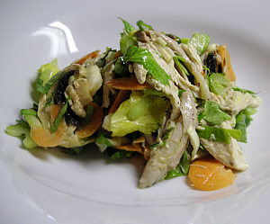

Pouletsalat mit Stangensellerie
5 von 6Einen Geflügelfond wie am 3.4.2006 zubereiten. Das Poulet jedoch nach 45min entfernen und das Fleisch vom Knochen trennen und in mundgerechte Stücke schneiden. Gemüse nach belieben (z.B. Stangensellerie, Frühlingszwiebeln, Karotten und Champignons) fein schneiden und mit dem Geflügel mischen. Mit Salatsauce marinieren und etwas ziehen lassen.
